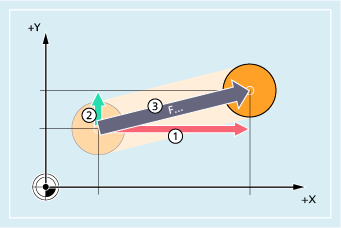
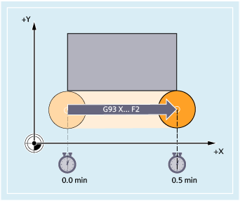
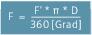

Vorschubgeschwindigkeit für Bahnachsen (F)
Im Regelfall setzt sich der Bahnvorschub aus den einzelnen Geschwindigkeitskomponenten aller an der Bewegung beteiligten Geometrieachsen zusammen und bezieht sich auf den Fräsermittelpunkt bzw. auf die Werkzeugspitze des Drehstahls. Die Vorschubgeschwindigkeit wird unter der Adresse F angegeben. Je nach Voreinstellung in den Maschinendaten gelten die über G-Befehle festgelegten Maßeinheiten in mm oder inch.
F... | Vorschubgeschwindigkeit für die Verfahrbewegungen der Bahnachsen |
① | Verfahrbewegung in x-Richtung |
② | Verfahrbewegung in y-Richtung |
③ | Resultierende Bahnbewegung |
Pro NC-Satz darf ein F-Wert programmiert werden. Die Einheit der Vorschubgeschwindigkeit wird über einen der G-Befehle G93/G94/G95 festgelegt. Der Vorschub F wirkt nur auf Bahnachsen und gilt solange, bis ein neuer Vorschubwert programmiert wird. Nach der Adresse F sind Trennzeichen zulässig.
Beispiele:
F100 oder F 100
F.5
F=2*FEED
Vorschubart (G93/G94/G95)
Die G-Befehle G93, G94 und G95 sind modal wirksam. Wird zwischen G93, G94 und G95 umgeschaltet, so ist der Bahnvorschubwert erneut zu programmieren. Für die Bearbeitung mit Rundachsen kann der Vorschub auch in Grad/min angegeben werden.
Zeitreziproker Vorschub (G93)
Der zeitreziproke Vorschub gibt die Zeitdauer für das Abfahren eines Satzes an.
Einheit: 1/min
Beispiel:
N10 G93 G01 X100 F2
Bedeutet: der programmierte Bahnweg wird in 0,5 min abgefahren.
| Hinweis |
Falls die Bahnlängen von Satz zu Satz sehr unterschiedlich sind, sollte bei G93 in jedem Satz ein neuer F-Wert bestimmt werden. Für die Bearbeitung mit Rundachsen kann der Vorschub auch in Grad/min angegeben werden. |
Vorschub für Synchronachsen
Der unter der Adresse F programmierte Vorschub gilt für alle im Satz programmierten Bahnachsen, jedoch nicht für Synchronachsen. Die Synchronachsen werden so gesteuert, dass sie für ihren Weg die gleiche Zeit benötigen wie die Bahnachsen und alle Achsen ihren Endpunkt zur gleichen Zeit erreichen.
Grenzgeschwindigkeit für Synchronachsen (FL)
Mit dem Befehl FL kann für Synchronachsen eine Grenzgeschwindigkeit programmiert werden. Falls kein FL programmiert wird, gilt die Eilganggeschwindigkeit. Abgewählt wird FL durch MD-Zuweisung (MD36200 $MA_AX_VELO_LIMIT).
Bahnachse als Synchronachse verfahren (FGROUP)
Mit FGROUP wird festgelegt, ob eine Bahnachse mit Bahnvorschub oder als Synchronachse verfahren werden soll. Bei der Schraubenlinieninterpolation kann z. B. festgelegt werden, dass nur zwei Geometrieachsen X und Y mit programmiertem Vorschub verfahren werden sollen. Die Zustellachse Z wäre dann Synchronachse.
Beispiel: FGROUP(X,Y)
FGROUP ändern
Eine Änderung der mit FGROUP getroffenen Einstellung ist wie folgt möglich:
Durch erneute Programmierung von FGROUP: z. B. FGROUP(X,Y,Z)
Durch Programmierung von FGROUP ohne Achsangabe: FGROUP()
Nach FGROUP() gilt der im Maschinendatum eingestellte Grundzustand. Geometrieachsen fahren jetzt wieder im Bahnachsverbund.
| Hinweis |
Achsbezeichner bei FGROUP müssen Kanalachsnamen sein. |
Maßeinheiten für den Vorschub F
Mit den G-Befehlen G700 und G710 wird zusätzlich zu den geometrischen Angaben auch das Maßsystem für die Vorschübe F definiert, d. h.:
bei G700: [inch/min]
bei G710: [mm/min]
| Hinweis |
Durch G70/G71 werden Vorschubangaben nicht beeinflusst. |
Maßeinheit für Synchronachsen mit Grenzgeschwindigkeit FL
Die für F per G-Befehl G700/G710 eingestellte Maßeinheit gilt auch für FL.
Maßeinheit für Rund- und Linearachsen
Für Linear- und Rundachsen, die über FGROUP miteinander verbunden sind und gemeinsam eine Bahn fahren, gilt der Vorschub in der Maßeinheit der Linearachsen. Je nach Voreinstellung mit G94/G95 in mm/min oder inch/min bzw. mm/Umdrehung oder inch/Umdrehung.
Die Tangentialgeschwindigkeit der Rundachse in mm/min oder inch/min errechnet sich nach der Formel:
mit: | F: | Tangentialgeschwindigkeit [mm/min] / [inch/min] |
F': | Winkelgeschwindigkeit [Grad/min] | |
π: | Kreiskonstante | |
D: | Durchmesser [mm] / [inch] |
Rundachsen mit Bahngeschwindigkeit F verfahren (FGREF)
Für Bearbeitungsvorgänge, bei denen das Werkzeug oder das Werkstück oder beide von einer Rundachse bewegt werden, soll der wirksame Bearbeitungsvorschub in gewohnter Weise als Bahnvorschub über den F-Wert programmiert werden können. Dazu muss für jede der beteiligten Rundachsen ein effektiver Radius (Bezugsradius) angegeben werden.
Die Einheit des Bezugsradius ist abhängig von der G70/G71/G700/G710-Einstellung.
Um zur Berechnung des Bahnvorschubs beizutragen, müssen alle mitwirkenden Achsen in den FGROUP-Befehl aufgenommen werden.
Um kompatibel zum Verhalten ohne FGREF-Programmierung zu bleiben, wird nach dem System-Hochlauf und bei RESET die Bewertung 1 Grad = 1 mm wirksam. Dies entspricht einem Bezugsradius von FGREF = 360 mm / (2π) = 57.296 mm.
| Hinweis |
Diese Voreinstellung ist unabhängig vom aktiven Grundsystem (MD10240 $MN_SCALING_SYSTEM_IS_METRIC) und von der aktuell wirksamen |
Besonderheiten:
| Programmcode | |
|---|---|
| N100 FGROUP(X,Y,Z,A) | |
| N110 G1 G91 A10 F100 | |
| N120 G1 G91 A10 X0.0001 F100 |
Bei dieser Programmierung wird der programmierte F-Wert in N110 als Rundachsvorschub in Grad/min bewertet, während die Vorschubbewertung in N120 abhängig von der aktuell wirksamen G70/G71/G700/G710-Einstellung entweder 100 inch/min oder 100 mm/min ist.
| Achtung |
VorschubunterschiedDie
|
Bezugsradius lesen
Der Wert des Bezugsradius einer Rundachse kann über Systemvariablen gelesen werden:
In Synchronaktionen oder mit Vorlauf-Stopp im Teileprogramm über die Systemvariable:
$AA_FGREF[<Achse>] | Aktueller Hauptlauf-Wert |
Ohne Vorlauf-Stopp im Teileprogramm über die Systemvariable:
$PA_FGREF[<Achse>] | Programmierter Wert |
Sind keine Werte programmiert, liest man in beiden Variablen für Rundachsen die Voreinstellung 360 mm / (2π) = 57.296 mm (entspricht 1 mm pro Grad).
Für Linearachsen liest man in beiden Variablen immer den Wert 1 mm.
Geschwindigkeitsbestimmende Bahnachsen lesen
Die an der Bahninterpolation beteiligten Achsen können über Systemvariablen gelesen werden:
In Synchronaktionen oder mit Vorlauf-Stopp im Teileprogramm über die Systemvariablen:
$AA_FGROUP[<Achse>] | Liefert den Wert "1", wenn die angegebene Achse per Grundeinstellung oder durch | |
$AC_FGROUP_MASK | Liefert einen Bitschlüssel der mit |
Ohne Vorlauf-Stopp im Teileprogramm über die Systemvariablen:
$PA_FGROUP[<Achse>] | Liefert den Wert "1", wenn die angegebene Achse per Grundeinstellung oder durch | |
$P_FGROUP_MASK | Liefert einen Bitschlüssel der mit |
Bahnbezugsfaktoren für Orientierungsachsen mit FGREF
Bei Orientierungsachsen ist die Wirkungsweise der FGREF[]-Faktoren davon abhängig, ob die Änderung der Orientierung des Werkzeugs entweder durch Rundachs- oder Vektorinterpolation erfolgt.
Bei Rundachsinterpolation werden die jeweiligen FGREF-Faktoren der Orientierungsachsen wie bei Rundachsen einzeln als Bezugsradius für die Wege der Achsen eingerechnet.
Bei Vektorinterpolation wird ein effektiver FGREF-Faktor wirksam, der als geometrischer Mittelwert aus den einzelnen FGREF-Faktoren bestimmt wird:
FGREF[effektiv] = n-teWurzel aus [(FGREF[A] * FGREF[B]...)]
mit: | A: | Achsbezeichner der 1. Orientierungsachse |
B: | Achsbezeichner der 2. Orientierungsachse | |
C: | Achsbezeichner der 3. Orientierungsachse | |
n: | Anzahl der Orientierungsachsen |
Beispiel:
Für eine Standard-5-Achs-Transformation gibt es zwei Orientierungsachsen und somit berechnet sich der effektive Faktor als Wurzel aus dem Produkt der beiden axialen Faktoren:
FGREF[effektiv] = Quadratwurzel aus [(FGREF[A] * FGREF[B])]
| Hinweis |
Mit dem effektiven Faktor für Orientierungsachsen |